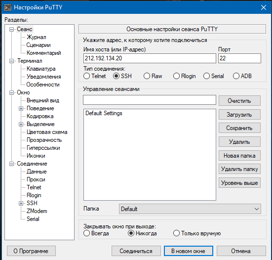

клонирование git-репозитория
передаем файлы через File Zilla
проверка файла index.php
подключаем 80 порт
[GET] запрашиваем документ в 1.0 HTTP
[GET] запрашиваем документ в 1.1 HTTP

[HEAD] запрашиваем только информацию заголовка о файле и ресурсе
[HEAD] определяем медиатип image.png
[POST] определяем комментарий index.php
[GET] определяем первые 100 байт файла file.tar.gz
[HEAD] определяем кодировку index.php